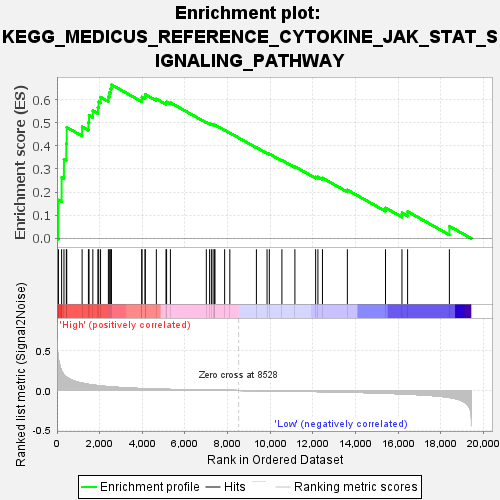
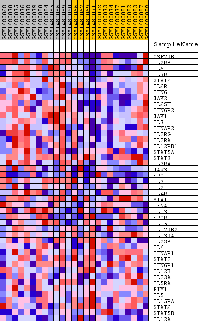
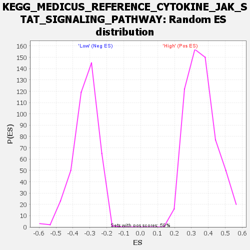

| Dataset | WG6v3.CYGB.cls#High_versus_Low.CYGB.cls#High_versus_Low_repos |
| Phenotype | CYGB.cls#High_versus_Low_repos |
| Upregulated in class | High |
| GeneSet | KEGG_MEDICUS_REFERENCE_CYTOKINE_JAK_STAT_SIGNALING_PATHWAY |
| Enrichment Score (ES) | 0.6638791 |
| Normalized Enrichment Score (NES) | 1.8491659 |
| Nominal p-value | 0.0 |
| FDR q-value | 0.104370505 |
| FWER p-Value | 0.097 |

| SYMBOL | TITLE | RANK IN GENE LIST | RANK METRIC SCORE | RUNNING ES | CORE ENRICHMENT | |
|---|---|---|---|---|---|---|
| 1 | CSF2RB | CSF2RB | 68 | 0.395 | 0.1660 | Yes |
| 2 | IL2RB | IL2RB | 216 | 0.246 | 0.2640 | Yes |
| 3 | IL6 | IL6 | 326 | 0.194 | 0.3418 | Yes |
| 4 | IL7R | IL7R | 437 | 0.170 | 0.4091 | Yes |
| 5 | STAT4 | STAT4 | 456 | 0.167 | 0.4798 | Yes |
| 6 | IL6R | IL6R | 1177 | 0.093 | 0.4824 | Yes |
| 7 | IFNG | IFNG | 1473 | 0.077 | 0.5003 | Yes |
| 8 | JAK2 | JAK2 | 1502 | 0.076 | 0.5314 | Yes |
| 9 | IL6ST | IL6ST | 1680 | 0.069 | 0.5519 | Yes |
| 10 | IFNGR2 | IFNGR2 | 1917 | 0.061 | 0.5660 | Yes |
| 11 | JAK1 | JAK1 | 1955 | 0.060 | 0.5898 | Yes |
| 12 | IL7 | IL7 | 2042 | 0.058 | 0.6102 | Yes |
| 13 | IFNAR2 | IFNAR2 | 2409 | 0.048 | 0.6119 | Yes |
| 14 | IL2RG | IL2RG | 2454 | 0.047 | 0.6298 | Yes |
| 15 | IL2RA | IL2RA | 2515 | 0.046 | 0.6464 | Yes |
| 16 | IL12RB1 | IL12RB1 | 2553 | 0.045 | 0.6639 | Yes |
| 17 | STAT5A | STAT5A | 3978 | 0.024 | 0.6006 | No |
| 18 | STAT3 | STAT3 | 3979 | 0.024 | 0.6109 | No |
| 19 | IL3RA | IL3RA | 4130 | 0.022 | 0.6127 | No |
| 20 | JAK3 | JAK3 | 4135 | 0.022 | 0.6220 | No |
| 21 | EPO | EPO | 4657 | 0.018 | 0.6027 | No |
| 22 | IL3 | IL3 | 5111 | 0.014 | 0.5854 | No |
| 23 | IL2 | IL2 | 5137 | 0.014 | 0.5902 | No |
| 24 | IL4R | IL4R | 5316 | 0.013 | 0.5866 | No |
| 25 | STAT1 | STAT1 | 7000 | 0.005 | 0.5020 | No |
| 26 | IFNA1 | IFNA1 | 7154 | 0.005 | 0.4961 | No |
| 27 | IL13 | IL13 | 7238 | 0.004 | 0.4936 | No |
| 28 | EPOR | EPOR | 7317 | 0.004 | 0.4913 | No |
| 29 | IL15 | IL15 | 7392 | 0.004 | 0.4891 | No |
| 30 | IL12RB2 | IL12RB2 | 7401 | 0.004 | 0.4903 | No |
| 31 | IL13RA1 | IL13RA1 | 7859 | 0.002 | 0.4677 | No |
| 32 | IL23R | IL23R | 8102 | 0.001 | 0.4558 | No |
| 33 | IL4 | IL4 | 9348 | -0.003 | 0.3927 | No |
| 34 | IFNAR1 | IFNAR1 | 9847 | -0.004 | 0.3688 | No |
| 35 | STAT2 | STAT2 | 9954 | -0.005 | 0.3653 | No |
| 36 | IFNGR1 | IFNGR1 | 10544 | -0.007 | 0.3377 | No |
| 37 | IL12B | IL12B | 11153 | -0.009 | 0.3102 | No |
| 38 | IL23A | IL23A | 12125 | -0.013 | 0.2656 | No |
| 39 | IL5RA | IL5RA | 12232 | -0.013 | 0.2658 | No |
| 40 | PIM1 | PIM1 | 12445 | -0.014 | 0.2610 | No |
| 41 | IL5 | IL5 | 13612 | -0.021 | 0.2096 | No |
| 42 | IL15RA | IL15RA | 15401 | -0.034 | 0.1320 | No |
| 43 | STAT6 | STAT6 | 16172 | -0.042 | 0.1105 | No |
| 44 | STAT5B | STAT5B | 16436 | -0.045 | 0.1164 | No |
| 45 | IL12A | IL12A | 18395 | -0.088 | 0.0530 | No |

